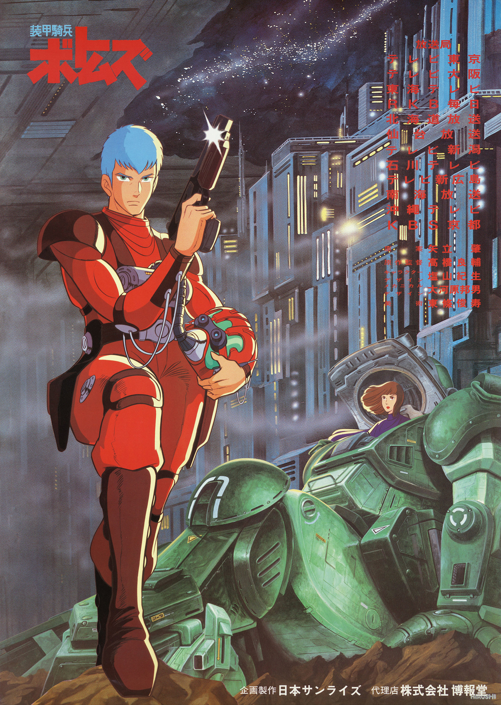
PRODUCTION INFORMATION
MOBILE SUIT GUNDAM (1979) began the trend of experimentation with the "mecha" genre which is what is now called the "real robot" movement, and Ryosuke Takahashi took this idea even further with a single statement proving to be the essence of what VOTOMS would become.
"When a soldier who only ever lived in the battlefield is suddenly dropped into civilian society at the end of a war, he would be an imperfect citizen. In a peaceful world, even an excellent soldier would be challenged on a spiritual level to fit in.” That became the foundation of this project, and thus the multi-arc epic was allowed to begin.
This series garnered a ton of success that spawned spin-offs and sequel and prequel OVAs, and while it is not as popular or as successful as GUNDAM still is, it still has a cult following amongst the most dedicated.Learn more about THE LAST RED SHOULDER!
Learn more about ROOTS OF AMBITION!
Air Date: April 1, 1983 to March 23, 1984
Series Length: 52 episodes
Director: Ryosuke Takahashi
Studio: Sunrise
STORY
A century of bloodshed between warring star systems has plunged nearly 200 worlds into the flames of war. Now, an uneasy truce has settled across the Astragius Galaxy.
Chiricho Cuvie, a special forces Armored Trooper Pilot is suddenly transferred into a unit engaged in a secret and highly illegal mission to steal a ton of military secrets... from their own military. Now he's on the run from his own army. Unsure of where his loyalties lie and to cover their own tracks, Chirico is left behind, alone, to die in space. Suriving by luck, the renegade is now hunted by both the conspirators and military intelligence.
He is driven by the haunting image of a mysterious and beautiful woman... the true objective of that illegal mission, and his sole clue to unraveling their schemes. This discovery has led Chirico on his never ending journey.
A journey into hell itself.
CAST AND CREDITS
Original Work: Ryosuke Takahashi
Direction: Ryosuke Takahashi
Mechanical Design: Kunio Okawara
Character Design: Norio Shioyama
Soundtrack: Hiroki Inui
Script: Fuyunori Gobou, Ryosuke Takahashi, Souji Yoshikawa, Jinzou Toriumi
Animation Direction: Norio Shioyama, Moriyasu Taniguchi, Keizou Shimizu, Eiji Suzuki, Satoshi Jinguu, Eiji Kamimura, Akira Saijou, Toshio Nitta, Yutaka Tanizawa, Tadashi Yahata
Chief Animation Direction: Norio Shioyama
Art Direction: Kazuo Okada, Masuo Nakayama, Mitsuharu Miyamae
IMAGE GALLERY
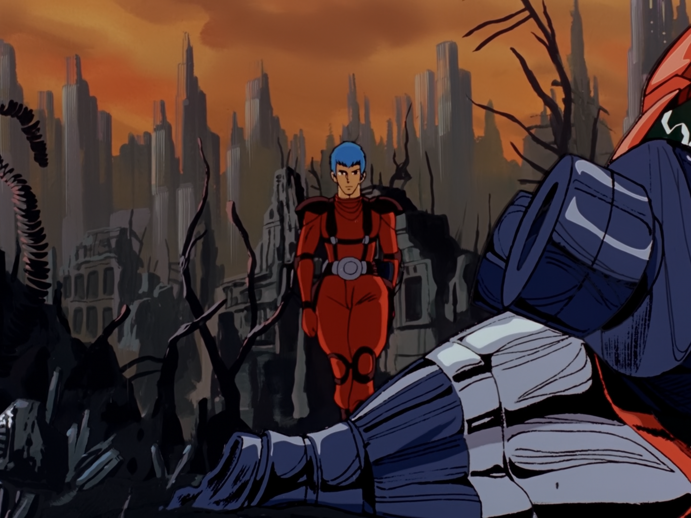
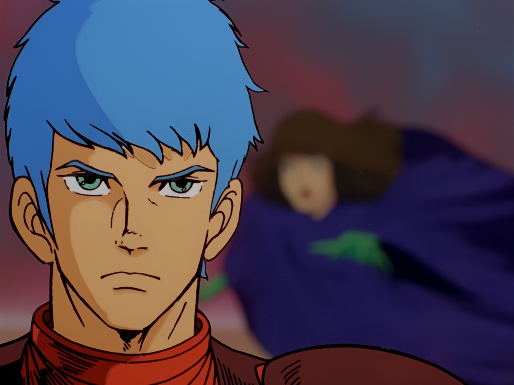
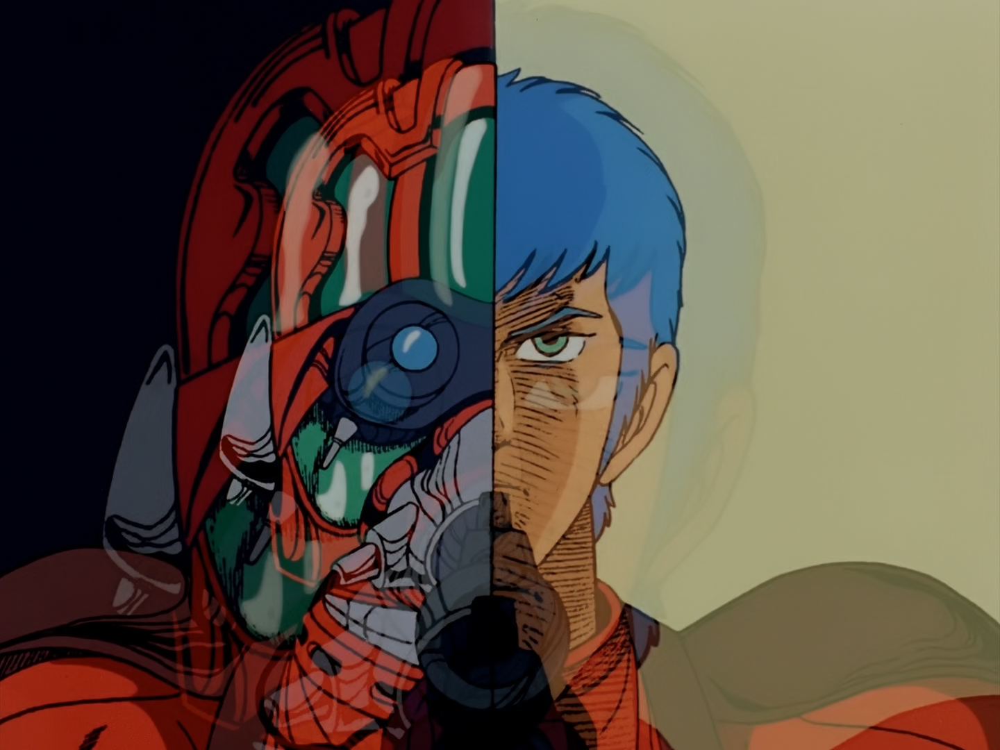
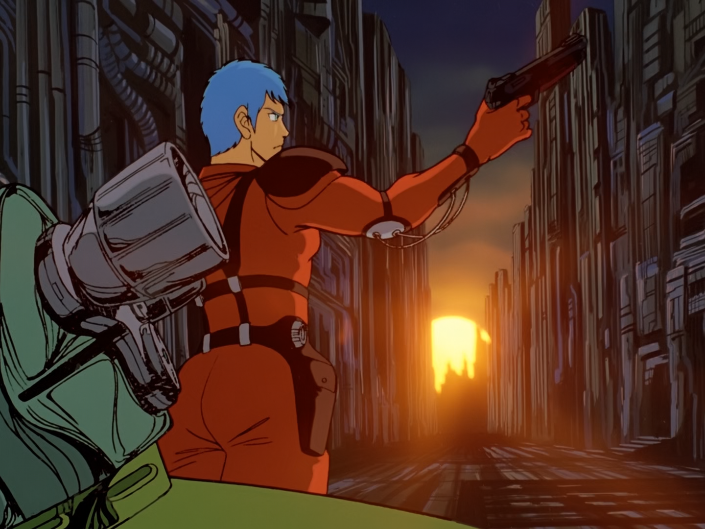
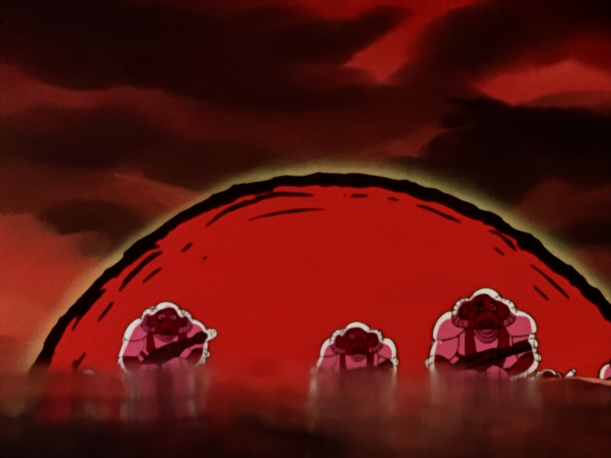
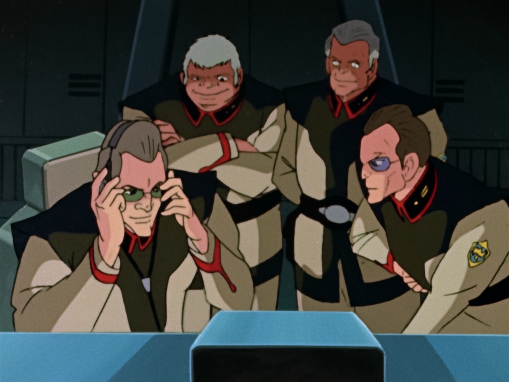
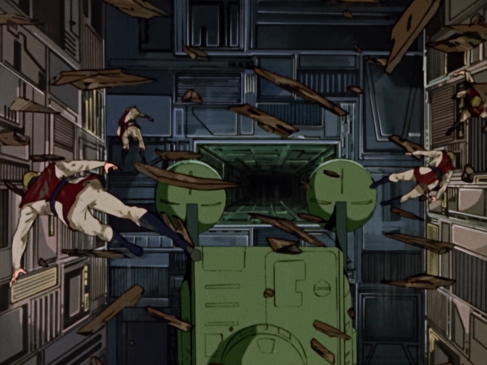
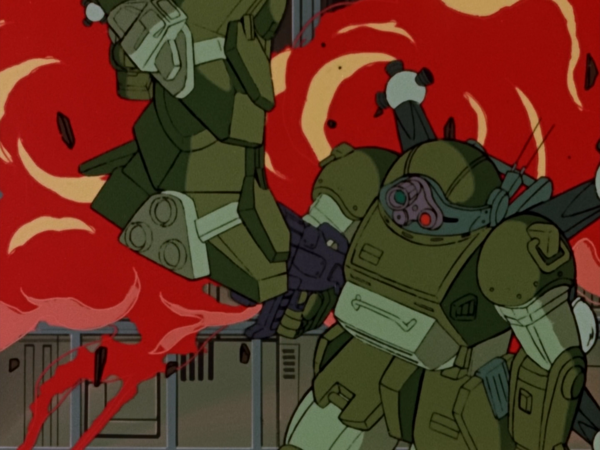
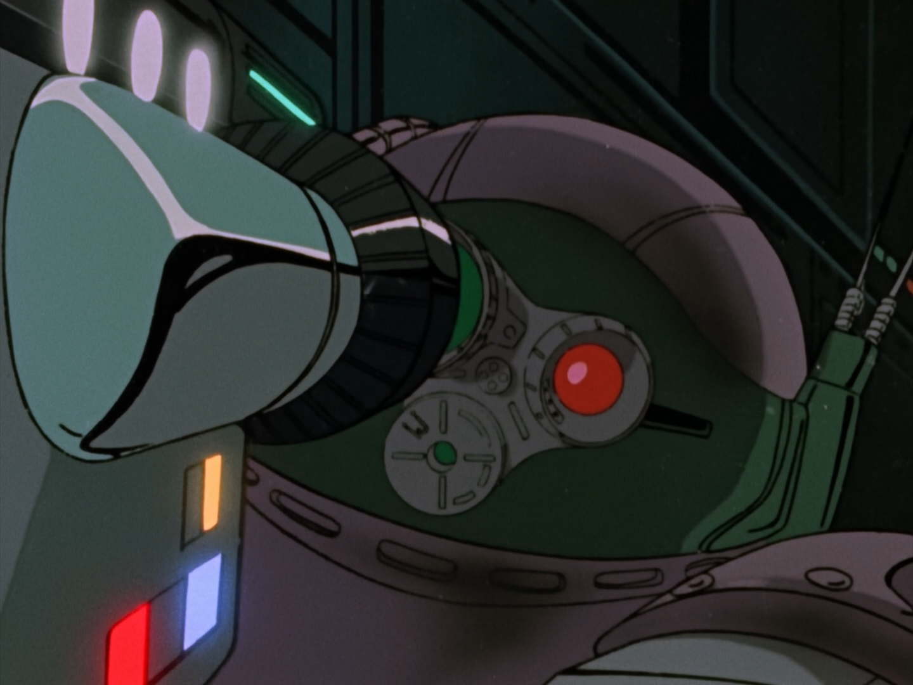
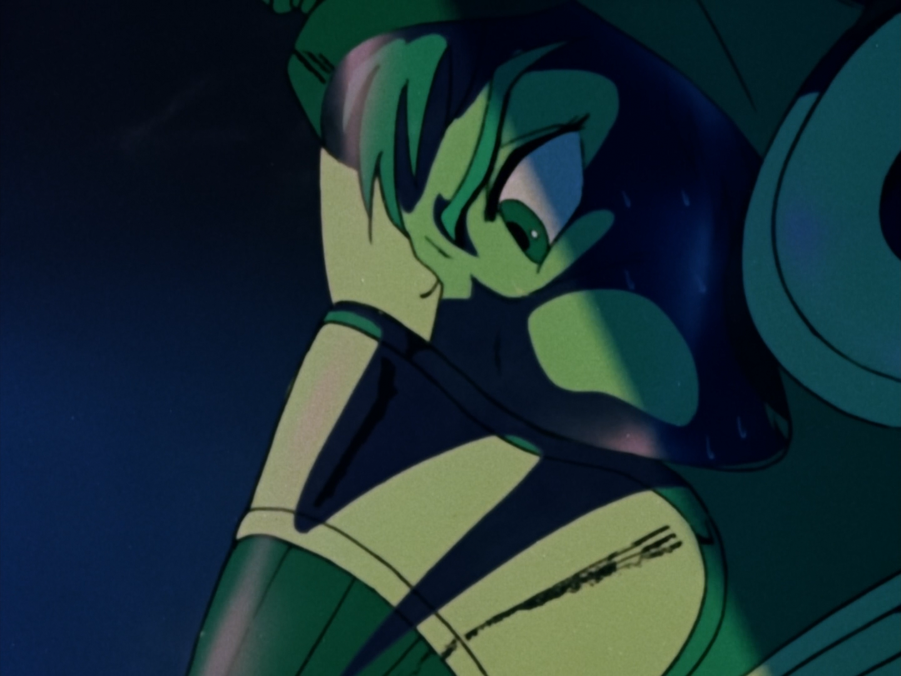
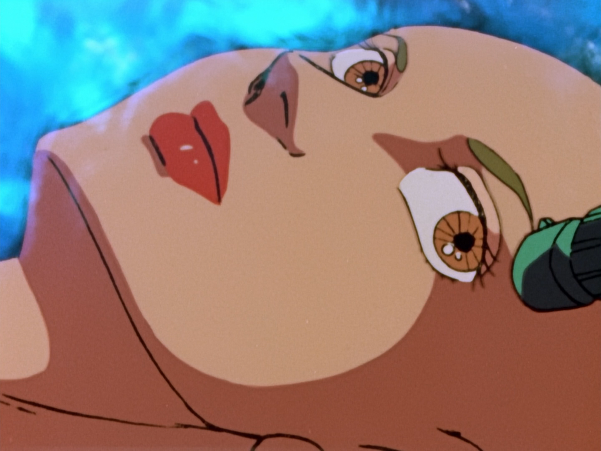
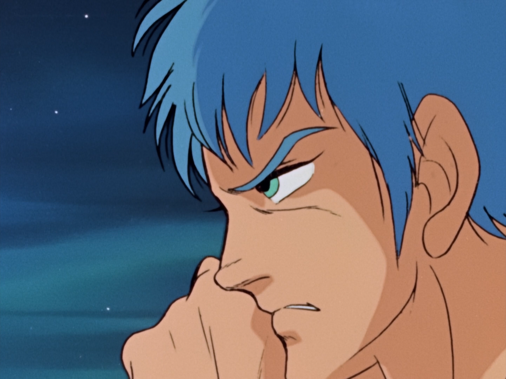